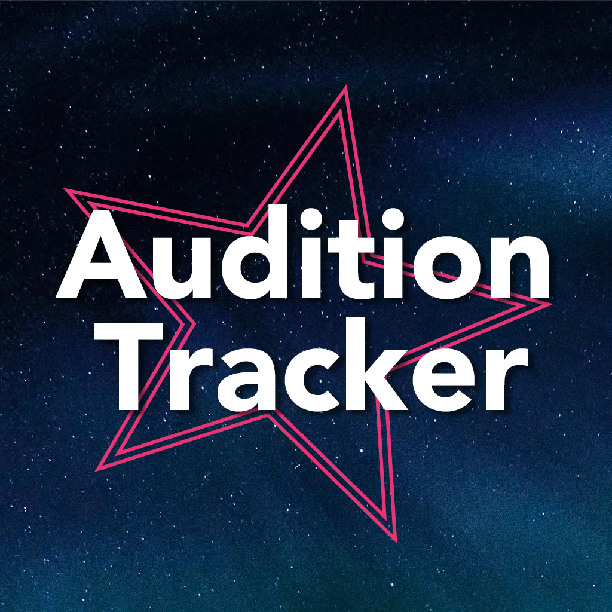

International casting call
Put working actors in the spotlight.
Your face. Your performance. Our music video.
We're inviting actors from around the world to take part in the official Audition Tracker music video. Choose your section, make it your own, and join actors from around the world in creating something together.
Enter the casting call
- Your section
- Pre-chorus
- Lip-sync chorus
The song
The song plays while you read. Pause it whenever you want, and download it so you can synchronise your performance.
Duration appears when the track loads.
The track is not on the site yet. Add the file as music-video-casting/audio/song.mp3.
Download the original song